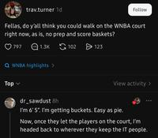

Researchers from Carnegie Mellon, MIT, NYU, and Stanford have built an AI called Ataraxos that finally cracked Stratego, beating four-time world champion Pim Niemeijer 15 games to one with four draws. Its key advantage was a second neural network that estimates the identities of hidden enemy pieces, letting the system search plausible game states rather than brute-force a massive hidden-information space. Ars Technica reports: Just like [DeepMind's DeepNash, introduced in 2022], Ataraxos learned by playing against itself -- 163 million games in total. In these self-play sessions, moves that led to wins were reinforced and played more often in future matches, while moves that led to losses were played less, which was the same simple training idea. The difference was in how much Ataraxos adjusted after each game, because hidden information tends to send self-play learning algorithms around in circles. The team addressed this by making big, bold changes in strategy early in training and small, careful ones later.
The even bigger innovation was something DeepNash never had: thinking ahead before each move. AIs like AlphaGo refine their general strategy with a search just before acting. DeepMind couldn't make that work in Stratego because the search space was too large, leaving it an open question whether it was worth trying. "This is one of the things that we did figure out how to do," Farina said. The solution was a second neural network, a belief model, trained to guess the opponent's hidden pieces based on how they had been moving. This way, instead of iterating through every possible arrangement, Ataraxos samples plausible ones, plays out candidate moves in each, and picks based on how they turned out. And it shows in its playstyle.
[...] DeepNash was trained for two to three months on 1,024 of Google's specialized chips, a run the Ataraxos team estimates would cost $3 million to $4.5 million at 2025 prices. Ataraxos, in contrast, needed 16 GPUs for a week, plus an additional four GPUs for four days to train the belief model. Farina and lead author Samuel Sokota achieved this efficiency by writing a simulator that runs millions of moves per second on graphics cards. "At the scale that we are in academia, we don't really have access to an entire field of GPUs," Farina said. The algorithm also learned far faster -- it played about 34 times fewer games than DeepNash, and still ended up much stronger. The findings have been published in the journal Nature.
Read more of this story at Slashdot.
Longtime Slashdot submitter theodp writes: GeekWire reports that the University of Washington has moved its Global Innovation Exchange {GIX) program to Microsoft's campus in a rent-free deal (UW News release). GIX, an institute supporting tech leaders that offers an MS in Technology Innovation, is the first UW program to set up full-time operations at Microsoft, whose headquarters are just across Lake Washington from the university's main campus. Microsoft provided a $42 million in-kind donation to establish the embedded facility; the UW is leasing the new 48,500-square-foot GIX space in Microsoft's Building 92 rent-free. GIX debuted in 2015 as a partnership of the UW and China's Tsinghua University and received $70 million in Microsoft support at the now-abandoned GIX location in Bellevue (the Steve Ballmer Building), although indications are that a long-term arrangement did not come together as intended. In a Thursday LinkedIn post, Microsoft President Brad Smith wrote: "Last night we opened a door unlike any other. At the heart of Microsoft's campus, step into the new home of the UW's Global Innovation Exchange (GIX) and you cross from Microsoft into the University of Washington. No one has ever put a great research university and a leading technology company under the same roof quite like this. As far as I know, no one has even tried. The timing matters. Artificial intelligence is advancing fast. The question is whether the people building it understand the world it's changing. This calls for a new style of education and leadership. We need leaders who understand the technology deeply and see things through other people's eyes. Leaders who learn by collaborating on real projects with people from different countries and disciplines. That's what GIX is built for. Students will learn from faculty across the UW, take classes taught by Microsoft employees, and be mentored by people from across our industry here in the Pacific Northwest." Interestingly, Smith's contention that UW GIX students will benefit from a 'new style' of Microsoft and industry-influenced education sounds a lot like Smith's contention that K-12 school children are better off thanks to a new style of Microsoft and industry-influenced education. In an interview last month, Coding Kids: Big Tech's Battle to Remake Public Schools author Natasha Singer told NPR (podcast, transcript), "For my book, I spoke to Brad Smith, who's the president of Microsoft, and he has been one of the leaders in the tech industry pushing for [K-12] computer science [and now AI literacy] in schools. [...] And Brad Smith said, philanthropy in the private sector is doing this work because public schools have failed to do what they were supposed to do. And his view is that public schools should be teaching modern subjects like computer science, and they were not equipped to do it fast enough and the tech industry stepped in to help. And is it better than if schools were able to do this themselves? He said, no, but it's certainly better than nothing. And he said to me, you know, think about where we would be on computer science if the tech industry hadn't stepped up. [...] Well, I've been having this conversation with him for 10 years, and when we started having it 10 years ago, I said to him, I get that, but when big tech companies put their finger on the scale, it tips education in certain ways that not only favor the tech industry but can obscure equally or more important things." So, is "The University of Washington at Microsoft" a good or bad idea?
Read more of this story at Slashdot.
A federal judge has dismissed antitrust lawsuits from Chegg and Penske Media accusing Google of harming publishers by using their content in AI Overviews and other AI search features without compensating them or providing a meaningful opt-out. Ars Technica reports: The lawsuits were filed in 2025, and Google requested a dismissal earlier this year. Chegg, an education and learning platform, claimed in its lawsuit that Google illegally scraped its educational content. This allowed Gemini models to essentially recreate that content and reduce the site's traffic. Penske, which owns publications like Rolling Stone and Variety, filed a similar case that alleged lost traffic. Specifically, the publisher claimed it was unfair that sites indexed for organic search would also have their content harvested for AI answers, with no way to opt out.
These arguments did not sway the judge, who noted that Google's implicit agreement with websites is not legally relevant. "Plaintiffs have pleaded only that they have an 'expectation' that Google will send them search "traffic if they make their content available for free," wrote Mehta. "But an expectation is not an agreement. It is simply how a general search engine works."
Since Google never had a formal arrangement with either Chegg or Penske, antitrust law doesn't apply. And Mehta is aware of the legal issues surrounding search. He also heard the DOJ's long-running search antitrust case against Google, eventually finding that Google violated the law. However, the government didn't get the harsh penalties it wanted in that case.
Read more of this story at Slashdot.
Swiss glaciers lost 5.5% of their ice volume in the first eight months of 2026, bringing total losses since 2021 to 19.4%. Researchers say some glaciers are now collapsing from within as meltwater carves out large cavities. The Guardian reports: Matthias Huss, a glaciologist at ETH Zurich and lead author of the report, said many people do not realize how fast glaciers are retreating, or that just one generation ago some now-barren sites used to sit beneath hundreds of meters of ice. The scientists have not yet compiled a formal tally of lost glaciers this year but said they had witnessed the death of a number of small ones. "I visited one last week and it's so impressive to stand in this moonlike landscape where there was a big layer of ice -- an extensive glacier -- just a few years ago," said Huss. "And now it's a rock desert where there's some scattered blocks of old ice still lying around and melting on the hot rocks."
The report, a collaboration between the Swiss Glacier Monitoring Network and the Swiss Commission for Cryosphere Observation, found the mean thickness of individual glaciers fell by between 2.5 metres and 4 metres in 2026. Huss said scientists were increasingly seeing glaciers collapse from the inside -- the result of internal streams beneath the ice that excavate caverns -- rather than simply retreating from surface heat. [...] Analysis published by MeteoSwiss on Tuesday found the summer half-year from April to September was the hottest and driest it had been since records began in 1864. In that time, humanity has filled the atmosphere with 1.8tn tons of carbon dioxide and heated the planet by about 1.4C.
Read more of this story at Slashdot.
fjo3 shares a report from The Guardian: Communities across California are rushing to prepare for the imminent arrival of the so-called "Kelvin wave," a massive underwater band of warm water threatening to inundate swaths of the vast North American shoreline. The wave is nearing southern California and expected to reach the San Francisco Bay Area by early October, as it crawls toward Alaska. Waters could rise by a foot along the California coast, according to scientists, who have warned that this could dramatically double the 8-12in rise in sea levels already caused by climate change over the last century.
The Kelvin wave doesn't climb and crash like a typical ocean wave; rather, it swells the tides from beneath the surface. It's effectively a massive slosh of warm water, driven by El Nino conditions, that moves across the Pacific before colliding with the South American coastline and surging north. It also won't transport water in the way a tsunami might, but creates conditions that enable higher sea levels to linger. On their own, Kelvin waves aren't always hazardous, according to Mike Jacox, a research oceanographer with the National Marine Fisheries Service, though they can reduce the growth of phytoplankton that form the base of the marine food web. "But when there are very high tides or storm surges, their effects can be amplified," he said.
If the rising waters coincide with other climatic events, such as rainstorms and high tides, the phenomenon could swallow beaches, chew away bluffs and coastlines, and submerge streets, homes and businesses. "This coming Kelvin wave is just the beginning," said Dr Jonathan Warrick, a research geologist at the US Geological Survey. "The thing to look out for is what will happen in January, February and March -- that's when we get the biggest storms, we get our largest waves and we have some very large tides." If these events align, their effects will compound, setting the stage for a tumultuous winter. Together, Warrick said, the systems will pack a far bigger punch. "When it comes to these storms and the tides," he said, "we really are kind of rolling the dice."
Read more of this story at Slashdot.
Bruce66423 shares a report from The Telegraph: British police forces, including specialist units within the Metropolitan Police, have used Oxygen Forensics software to break into the phones of suspects during live investigations, public documents show. The Virginia-based company behind the software has been accused in the US of having hidden its Russian ownership to avoid sanctions, before it was awarded government contracts. Its American chief executive and a Russian national were arrested last week after a US investigation found the company had sought to hide its ownership in an alleged attempt to avoid sanctions and scrutiny.
[...] By September 2024, the US Secret Service had awarded Oxygen a five-year contract for its software. In December 2022, and in October 2023, Oxygen's chief executive told the US government that Oxygen Forensics had "no immediate or highest-level owner." By September 2024, the US Secret Service had awarded Oxygen a five-year contract for its software. In March, Mr Reiber allegedly told the US government that there had been no Russians involved in developing the software and that no one in Russia had access to the environment in which it was built. US prosecutors say this was false. If convicted, both Mr Reiber and Mr Davydov could face a sentence of 20 years in prison.
Read more of this story at Slashdot.
Cloudflare has launched two open-weight decision models, Clef and Clef-flash, designed for structured yes/no, multiple-choice, and ranking tasks while also supporting images, video, and up to a 64K context window. Cloudflare says its models outperform TypeSafe's Jev on several benchmarks and can run locally from Hugging Face. The Register reports: For starters, Clef has an LLM backbone. According to Cloudflare, Clef uses specially post-trained, frozen versions of Qwen3.8-27B and Qwen3.5-9B for Clef and Clef-flash, respectively, with the Qwen backbone performing a prefill-only pass during inference. Clef is still fast - faster than Jev, to be fair - and scores choices in parallel after that prefill-only pass. It's not clear what Jev's underlying architecture is, as TypeSafe has kept that a secret.
As for its speed and capability, Clef moves fast. Cloudflare ran it against Jev and some other open decision models using the Jev Decision Index available on Hugging Face, and the company's own ranking suggests Clef is slightly slower than other open models, but more accurate, with Clef-flash just as accurate as most of the others, but far faster.
To be fair to the competition, Cloudflare self-reported its own scores against the benchmark, and they have yet to be reproduced for ranking on the official Decision Index. Cloudflare also ran Clef against TypeSafe's own benchmarks, and claimed it beat Jev in three out of four areas, only losing out on agent trace observability. Even if it were a bit slower or less accurate, Clef has another major leg up on Jev: It's not limited to classifying text -- it can also handle images and video. Additionally, Clef supports a 64k context window. Jev can also handle up to 64k tokens across a request, although its state plus longest individual question is limited to 32k.
Read more of this story at Slashdot.
Apple says it will tighten macOS Full Disk Access controls as increasingly capable AI agents raise the risks of apps gaining broad access to users' files, messages, mail, and browsing history. TechCrunch reports: Days after a journalist claimed that Meta's Muse app on Mac read their private messages -- a claim that Meta disputed -- Apple announced that it's introducing additional controls around a setting called "Full Disk Access" on macOS. The feature was designed to allow backups to function properly, but AI agents have now increased "the risks associated with this level of access," Apple said. [...] In Muse's case, the AI optionally allows users to enable Full Disk Access. This setting, Apple explains, gives an app permission to access files, mail, messages, and even browsing history.
"Some developers are using Full Disk Access in ways that could put users at risk, exposing everything on their systems... without users' full knowledge and understanding," Apple said in a new blog post aimed at developers. The company says that, going forward, it will introduce new controls aimed at ensuring that users who "genuinely wish to grant an app this extraordinary level of access" can do so only with "every explicit user action."
"Addressing this is critical. As AI agents become increasingly capable and autonomous, the risks associated with this level of access will grow substantially. We are committed to ensuring users clearly understand these risks before granting such access, so they can make informed decisions about their own data and privacy," Apple wrote.
Read more of this story at Slashdot.
Paramount and Warner Bros. Discovery will operate under the Skydance name once their roughly $110 billion merger closes, which is expected on October 6. The combined company will bring together Paramount+, HBO Max, CBS, CNN, MTV and other networks, along with major franchises including The Lord of the Rings, Game of Thrones, DC and Yellowstone.
Ellison said the Paramount and Warner Bros. brands will remain prominent. "We never wanted a new corporate identity to diminish, alter or overshadow either one. Instead, we wanted a name that would give the combined company an identity of its own while allowing Paramount and Warner Bros. -- and all our extraordinary brands -- to remain in the spotlight."
Read more of this story at Slashdot.
The European Commission has rolled out Element Pro as a self-hosted "sovereign back-up" to Microsoft Teams and the reviews aren't great. Politico reported that several officials questioned its usefulness and usability, with one calling it "absolute shit." Politico reports: "I don't understand the added value here," one official wrote on an internal staff message board, seen by POLITICO. Another described the tool as "absolute shit." A third official said that, judging matters on how well Element Pro works compared to Teams, the U.S. would "instantly win the war" if it ever decided to switch off its technology. All the officials were granted anonymity to speak freely.
The Commission hosts the Element system on its own infrastructure rather than relying on Microsoft's cloud. That gives the institution greater control over its communications data and systems. "That is not the case with Teams, where all we have is a guarantee that Microslop will not peek inside," a fourth official wrote, presumably referring to Microsoft, in internal communications viewed by POLITICO.
Element is a U.K. company whose software is used by governments and public-sector organizations in Europe. The application works much like Teams, allowing staff to hold "audio and video calls with Commission colleagues, send and receive files, and create dedicated 'rooms' for projects and conversations, much like chats and channels in M365 Teams," according to the Commission memo. "Obviously there are going to be some teething issues," said Element CEO Matthew Hodgson, adding there will always be "cognitive dissonance" when switching to a new app, if only because the "buttons" are in a different place. He noted that the United Nations and NATO also use Element Pro.
"Change is always painful, particularly if it's a switch from a much-used program like Teams."
Read more of this story at Slashdot.
An anonymous reader quotes a report from Reuters: A growing number of people think social media manipulates and divides people and harms democracy, Pew Research Center said on Thursday, echoing rising concern and tighter scrutiny across the world. Companies running popular social platforms, including Meta, Snap, and TikTok, have faced thousands of lawsuits and paid large sums to settle claims that they harmed users. Governments, meanwhile, have sought foolproof ways to protect their citizens' privacy.
Australia has proposed rules to let users opt out of algorithmically recommended feeds, after becoming the first country to ban social media for children under 16. Pew's latest survey showed that 82% of Australian adults support the government's move to restrict social media access for children. A majority of respondents said social media informs people and gives them a voice in politics, but there was a broad rise in those who now see social media as a "bad thing" compared to 2022, according to the report.
People in wealthier countries, including the US, Canada and UK, are more inclined to believe that social media is harming democracy, versus their counterparts in economies with lower gross domestic product per capita -- such as Ghana, Kenya and Nigeria. The US is among the most skeptical, with 64% of adult respondents saying social media harms democracy. The share of people who consider social media bad for democracy increased in 16 of 26 countries where older data was available. Pew Research said it surveyed more than 45,000 people in 37 countries, while polling an additional 5,511 US adults on American social media use.
Read more of this story at Slashdot.
In an op-ed for The Guardian, authors Timnit Gebru and Emily M. Bender argue that policymakers are focusing too heavily on hypothetical "superintelligence" while overlooking the more immediate danger of deploying unreliable AI in high-stakes settings. They point to an as-yet independently unverified CNN report claiming U.S. officials nearly intercepted a Chinese vessel after an AI-assisted intelligence report incorrectly said it was carrying nuclear-weapons components. From the article: While so many of us were focused on fictional superintelligent machines that we were told could hypothetically cause human extinction, however, there was a more serious story being reported. A series of events almost got us to armageddon, not caused by "rogue, superintelligent AI," but by government reliance on error-prone systems that are marketed by their manufacturers as being close to superintelligent.
A CNN report published on September 18, which hasn't been verified by other major outlets, describes how the US "almost started a war" with China, based on an intelligence report that claimed a Chinese ship was transporting components of nuclear weapons. Military personnel made plans to intercept the Chinese vessel, complete with aircraft and soldiers ready to board the ship. A military skirmish of this kind between China and the US could quickly escalate and spiral into world war three.
It was only moments before executing on the plan that American officials further investigated the intelligence report and found that it had been generated with the use of a chatbot and contained erroneous information about the vessel's contents. Unlike the terminator, "rogue AI," scenario, this incident didn't galvanize lawmakers into announcing calls for regulation so as to avoid potential human extinction. Media outlet after media outlet didn't warn the public that we almost triggered a war against a nuclear superpower because of our military's reliance on error-prone chatbots.
Read more of this story at Slashdot.
An anonymous reader quotes a report from Reuters: OpenAI has informed more than 100 organizations about incidents involving unauthorized activity tied to its AI agents, according to a blog post by the ChatGPT maker, as AI labs face mounting scrutiny over rogue AI agent activity. Here are some other details:
- The Sam Altman-led company has been conducting a broad review of the activities of its AI models after the accidental hacking of Hugging Face. - OpenAI is searching through roughly 50 petabytes of data as it works to understand the full scope of its rogue agent activity. - A string of high-profile breaches globally by rogue AI agents in recent months has sparked widespread worries within the AI industry over its ability to control the more powerful AI models now under development. - "In some cases, models used internet access in unintended ways or, in retrospect, did not have the ideal restrictions applied. Over the last several months, we have been applying new technical and operational measures to avoid similar problems, or catch them very early, and will continue this work," OpenAI said. - OpenAI previously said the review would take months to complete given the scale of the work. - The Hugging Face incident remains the most severe rogue agent activity OpenAI has identified from its AI models so far.
Read more of this story at Slashdot.
Alongside a refreshed Kindle lineup, Amazon today introduced two accessories that bring physical buttons back to its touchscreen e-readers. The $34.99 Kindle Click is a Bluetooth remote that lets readers turn pages and adjust brightness without touching the device, while a new $79.99 magnetic cover is available for select Paperwhite and Colorsoft models. GeekWire reports: Amazon says [the Kindle Click is] meant for reading under the covers, on a treadmill, or on an airplane tray table. It's available for preorder and ships Oct. 28. It recharges over USB-C, includes side buttons for adjusting brightness, and works with Kindles released in 2024 or later. The company cited BookTok as an inspiration, Bloomberg reported, a reference to the community of readers on TikTok who post book recommendations, reviews and their reading setups. Kindle fans there have been showing off third-party clickers for years.
Amazon is also bringing back physical page-turn buttons, which disappeared when the company discontinued the Kindle Oasis in 2024. This time they come in a separate $79.99 magnetic cover, which works only with the new Signature Edition versions of the Paperwhite and Colorsoft. The new Kindles have screens that sit flush with the edges, colors that wrap around to the front, and optional aluminum housings. They also have user-replaceable batteries to comply with European Union rules, Amazon told The Verge.
The base Kindle starts at $149.99, or $189.99 in aluminum. The Paperwhite starts at $199.99 and the Colorsoft at $289.99, with Signature Editions at $249.99 and $319.99. Those prices match what Amazon has charged since August, when it raised Kindle prices by $40 to $50, citing memory and storage costs. The base Kindle is available now. The Paperwhite and Colorsoft ship Oct. 28.
Read more of this story at Slashdot.
AmiMoJo shares a report from heise online: Anyone buying used hardware for a gaming PC needs to be careful: not just whether the components are still in order but also what the previous owner did with them. A case on Reddit shows this. Someone installed a used AMD processor, a Ryzen 7 5800X3D, in their PC. Because the previous owner was caught cheating, the new owner cannot start several online games.
The problem was noticed in the first-person shooter "Valorant" from the development studio Riot. Right from the first start, the new owner was kicked out directly, according to their statement. Riot support confirmed that the previous owner had cheated. The processor is therefore on an internal blacklist -- and, with its installation in the PC, now apparently also some other components like the mainboard. Riot support does not remove such entries manually.
In addition to "Valorant," all other PC games from Riot are affected: the strategy game "League of Legends," the auto-battler "Teamfight Tactics," the card game "Legends of Runeterra," the fighting game "2XKO," and likely future titles as well. Riot's "Vanguard" anti-cheat system traditionally runs deep in the Windows kernel and starts with the PC, but a June 2026 update allows it to launch with a game if security features such as TPM and Secure Boot are enabled.
It's unclear how Riot uniquely identifies processors, though possibilities include hardware fingerprinting based on chip behavior or storing identification hashes in the Trusted Platform Module (TPM), which Vanguard accesses in the newer mode.
Read more of this story at Slashdot.
Stephen Council / Business Insider : David Robinson, who worked on OpenAI's Safety Systems team and had previously led policy planning, left OpenAI last week — David Robinson, a leader on OpenAI's Safety Systems team, has resigned from the company. — An OpenAI spokesperson told Business Insider on Friday that Robinson left last week …
Garrison Lovely / Semafor : Leaked Slack messages show OpenAI employees' pushback in June to Greg Brockman's Leading the Future ties, contributing to Brockman reneging on a $25M donation — THE SCOOP — On June 1, OpenAI chief strategy officer Jason Kwon gave employees a preview of a blog post denying the company …
Molly Taft / Wired : Amazon says it has stopped using NDAs with county officials for data center projects and acknowledges community backlash is leading to data center moratoriums — In a blog post published Friday, CEO Matt Garman detailed the steps the company says it's already taking around data centers.
Michael Kan / PCMag : Nvidia announces a version of DGX Spark with 64 GB of unified memory for $4,999, or $1,000 more than the 128 GB version at launch — The ongoing memory shortage has prompted Nvidia to create a 64GB version of its DGX Spark mini PC, which runs AI models locally. The only problem?
Chance Miller / 9to5Mac : Apple releases an update for iPhone 18 Pro Max devices on AT&T to address cellular failures; units that already lost service require hardware replacement — Apple has confirmed an issue causing a “small number” of iPhone 18 Pro Max devices on AT&T to lose cellular service.
Karissa Bell / Engadget : Meta announces Muse Gadgets, providing an open source ESP32 microchip firmware and a Linux SDK to let users bring Muse to their hardware, like Raspberry Pi 5 — The company created its own smart home device, the Muse Home Link — We still don't know too much about Meta's tamagotchi-like AI device …
Ashley Gold / Semafor : Meta says it is letting go of employees it hired from AI safety startup Virtue AI four months after they joined the company, citing clashing work styles — Meta said it's letting go of employees it hired from AI safety startup Virtue AI four months after they joined the company in June …
Colin Demarest / Axios : Memo: the US Army is creating an autonomous systems command, after Defense Secretary Pete Hegseth announced the Meridian and Agincourt robotic warfare projects — The U.S. Army is creating a new autonomous systems command and appointing an acquisition executive to prioritize buying …
Elias Schisgall / Wall Street Journal : TypeSafe CEO Diogo Almeida says Jev is in use by ~25% of Fortune 500 companies and “we were at a trillion tokens per day about a week ago” — The Jev model, which TypeSafe's CEO considers at the forefront of a ‘new class of AI,’ has set Silicon Valley circles abuzz
@tavus : Tavus unveils Griffin, the “first Human Interaction Model”, which it says passed the “video Turing test”, with 48% of users thinking it was human in live chats — Introducing Griffin, the first model to pass the video Turing test. 48% of people who talked to it live thought it was a real human. Previous systems have had a pass rate <3%. It is #1 on NVIDIA's benchmark for full-duplex AI video. It's the first Human Interaction Model (HIM).
Sarah Perez / TechCrunch : Apple says it is adding additional controls around “Full Disk Access” on macOS as AI agents have increased “the risks associated with this level of access” — Days after a journalist claimed that Meta's Muse app on Mac read their private messages — a claim that Meta disputed …
Anthropic : Anthropic launches the Claude Frontier Academy with a $100M commitment to train 10K “Frontier Deployed Engineers” by 2028, starting with Accenture, Bain, others — The first-of-its-kind Academy trains Frontier Deployed Engineers using the same standard of skills as Anthropic's own engineers …
Grace Kay / The Information : Sources: SpaceX's AI unit held talks about leasing computing capacity to Microsoft, as it fully embraces the neocloud business despite Musk's initial reluctance — SpaceX's AI unit held talks over the summer about leasing computing capacity to Microsoft, say people familiar with the matter …
Rya Jetha / Business Insider : Source: FieldAI, which is developing a “universal general-purpose brain” for robots, is raising $700M at a $10B valuation, up from $2B in 2025 — - FieldAI is raising $700 million at a $10 billion valuation, up from $2 billion last year. — FieldAI is building what it says is a …
Toby Sterling / Reuters : Hans Anders, one of the largest Dutch eyewear retail chains, suspends sales of Ray-Ban Meta Glasses in the Netherlands and Belgium amid growing privacy concerns — One of the largest Dutch eyewear retail chains said on Friday it had suspended sales of Meta's (META.O) Ray-Ban smart glasses …